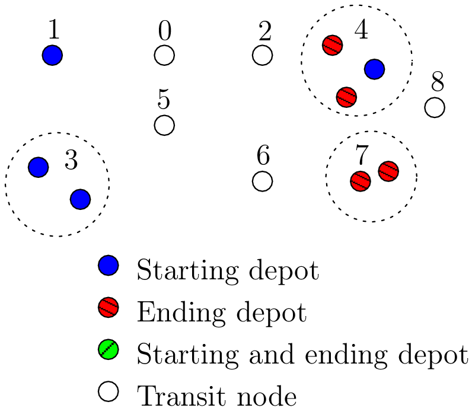
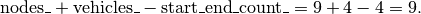
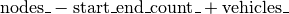
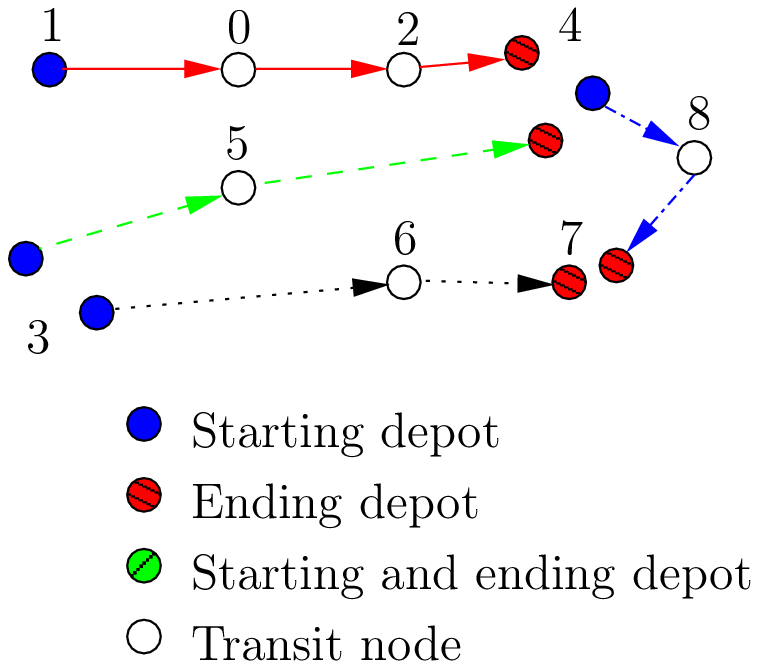

13.11. The Routing Library (RL)
Each node has a unique identifier of type RoutingModel::NodeIndex but we use internally a unique index of type int64 (see the section The model behind the scenes: the main decision variables). The model is explained in broad terms in the section The model behind the scenes: overview.
All components are defined or accessible within the RoutingModel class. To use this class, include the mandatory constraint_solver/routing.h header.
13.11.1. Global constants
Some global constant basic paratemers of the model are:
| Variables (pu/pr) | Descriptions | Queries |
|---|---|---|
| solver_ (pr) | CP Solver. | Solver* solver() const |
| nodes_ (pr) | Total number of nodes. | int nodes() const |
| vehicles_ (pr) | Total number of vehicles. | int vehicles() const |
| start_end_count_ (pr) | Total number of different (starting and ending) depots. | None |
| kUnassigned (pu) | static const int = -1 | kUnassigned |
| kNoPenalty (pu) | static const int = -1 | kNoPenalty |
| RoutingModel:: kFirstNode (pu) | RoutingModel:: NodeIndex(0) | RoutingModel:: kFirstNode |
| RoutingModel:: kInvalidNodeIndex (pu) | RoutingModel:: NodeIndex(-1) | RoutingModel:: kInvalidNodeIndex |
| Size() (pu) | Number of IntVar variables. | Size() |
(pu) stands for public and (pr) for private. The int64 Size() const method returns nodes_ + vehicles_ - start_end_count_, which is exactly the minimal number of variables needed to model the problem at hand with one variable per node (see next subsection). kUnassigned is used for unassigned indices.
13.11.2. The auxiliary graph
You can find the source code in the file rl_auxiliary_graph.cc.
The auxiliary graph is a graph constructed from the original graph. Let’s examine the original graph of the next figure:

There are nine nodes, two of which are starting depots (1 and 3), one is an ending depot (7) and one is a starting and ending depot (4). The NodeIndexes range from 0 to 8.
There are start_end_count_ = 4 distinct depots (nodes 1, 3, 4 and 7) and nodes_ - start_end_count_ = 5 transit nodes (nodes 0, 2, 5, 6 and 8).
In this example, we take four vehicles/routes:
- route 0: starts at 1 and ends at 4
- route 1: starts at 3 and ends at 4
- route 2: starts at 3 and ends at 7
- route 3: starts at 4 and ends at 7
Here is the code:
std::vector<std::pair<RoutingModel::NodeIndex,
RoutingModel::NodeIndex> > depots(4);
depots[0] = std::make_pair(1,4);
depots[1] = std::make_pair(3,4);
depots[2] = std::make_pair(3,7);
depots[3] = std::make_pair(4,7);
RoutingModel VRP(9, 4, depots);
The auxiliary graph is obtained by keeping the transit nodes and adding a starting and ending depot for each vehicle/route if needed as shown in the following figure:
Node 1 is not duplicated because there is only one route (route 0) that starts from 1. Node 3 is duplicated once because there are two routes (routes 1 and 2) that start from 3. Node 7 is duplicated once because two routes (routes 2 and 3) end at 7 and finally there are two copies of node 4 because two routes (routes 0 and 4) end at 4 and one route (route 3) starts from 4.
The number of variables is:

These nine variables correspond to all the nodes in the auxiliary graph leading somewhere, i.e. starting depots and transit nodes in the auxiliary graph.
13.11.2.1. nexts_ variables
The main decision variables are IntVar* stored in an std::vector nexts_ and can be accessed with the NextVar() method. The model uses one IntVar variable for each node that can be linked to another node. If a node is the ending node of a route (and no route starts from it), we don’t use any NextVar() variable for that node. The minimal number of nexts_ variables is:

We need one variable for each node that is not a depot (nodes_ - start_end_count_) and one variable for each vehicle (a starting depot: vehicles_).
Remember that the int64 Size() const method precisely returns this amount:
// Returns the number of next variables in the model.
int64 Size() const { return nodes_ + vehicles_ - start_end_count_; }
The domain of each IntVar is [0,Size() + vehicles_ - 1]. The end depots are represented by the last vehicles_ indices.
Numbering of the int64 indices
The SetStartEnd() method takes care of the numbering.
Nodes in the original graph that lead somewhere (starting depots and transit nodes) are numbered from 0 to nodes_ + vehicles_ - start_end_count_ - 1 = Size() - 1. The end depots are numbered from Size() to Size() + vehicles_ - 1.
The numbering corresponds to the order in which the original nodes RoutingModel::NodeIndexes are given and the order the (start, end) pairs of depots are given.
In total there are (Size() + vehicles_) int64 indices: one index for each transit node and one index for each combination of depots and vehicles.
For our example, this numbering is as follows:

If you set the FLAGS_log_level to 2 and skip the log prefix:
./rl_auxiliary_graph --log_level=2 --log_prefix=false
you get:
Number of nodes: 9
Number of vehicles: 4
Variable index 0 -> Node index 0
Variable index 1 -> Node index 1
Variable index 2 -> Node index 2
Variable index 3 -> Node index 3
Variable index 4 -> Node index 4
Variable index 5 -> Node index 5
Variable index 6 -> Node index 6
Variable index 7 -> Node index 8
Variable index 8 -> Node index 3
Variable index 9 -> Node index 4
Variable index 10 -> Node index 4
Variable index 11 -> Node index 7
Variable index 12 -> Node index 7
Node index 0 -> Variable index 0
Node index 1 -> Variable index 1
Node index 2 -> Variable index 2
Node index 3 -> Variable index 3
Node index 4 -> Variable index 4
Node index 5 -> Variable index 5
Node index 6 -> Variable index 6
Node index 7 -> Variable index -1
Node index 8 -> Variable index 7
The variable indices are the int64 indices used internally in the RL. The Node Indexes correspond to the unique NodeIndexes of each node in the original graph. Note that NodeIndex 7 doesn’t have a corresponding int64 index (-1 means exactly that) and that NodeIndex 8 corresponds to int64 7 (not 8!).
Here is one possible solution:
We output the routes, first with the NodeIndexes and then with the internal int64 indices with:
for (int p = 0; p < VRP.vehicles(); ++p) {
LG << "Route: " << p;
string route;
string index_route;
for (int64 index = VRP.Start(p); !VRP.IsEnd(index); index =
Solution->Value(VRP.NextVar(index))) {
route = StrCat(route,
StrCat(VRP.IndexToNode(index).value(), " -> "));
index_route = StrCat(index_route, StrCat(index, " -> "));
}
route = StrCat(route, VRP.IndexToNode(VRP.End(p)).value());
index_route = StrCat(index_route, VRP.End(p));
LG << route;
LG << index_route;
}
and get:
Route: 0
1 -> 0 -> 2 -> 4
1 -> 0 -> 2 -> 9
Route: 1
3 -> 5 -> 4
3 -> 5 -> 10
Route: 2
3 -> 6 -> 7
8 -> 6 -> 11
Route: 3
4 -> 8 -> 7
4 -> 7 -> 12
Some remarks
NodeIndex and int64 indices don’t necessarly match;
For each route, the starting int64 index is smaller than the ending int64 index;
All ending indices are equal or greater than Size(). Because there are vehicles_ ending int64 indices, this means that all int64 indices equal or greater than Size() must correspond to end depots. The method IsEnd(int64) is thus simply:
bool IsEnd(int64 index) { return index >= Size(); }
13.11.3. Variables
13.11.3.1. Path variables
13.11.3.2. Dimension variables
13.11.4. Constraints
13.11.4.1. NoCycle constraint
Google or-tools |
User's Manual
Google search
Welcome
Tutorial examples
Current chapter
Previous section
13.10. Meta-heuristics and SearchMonitors